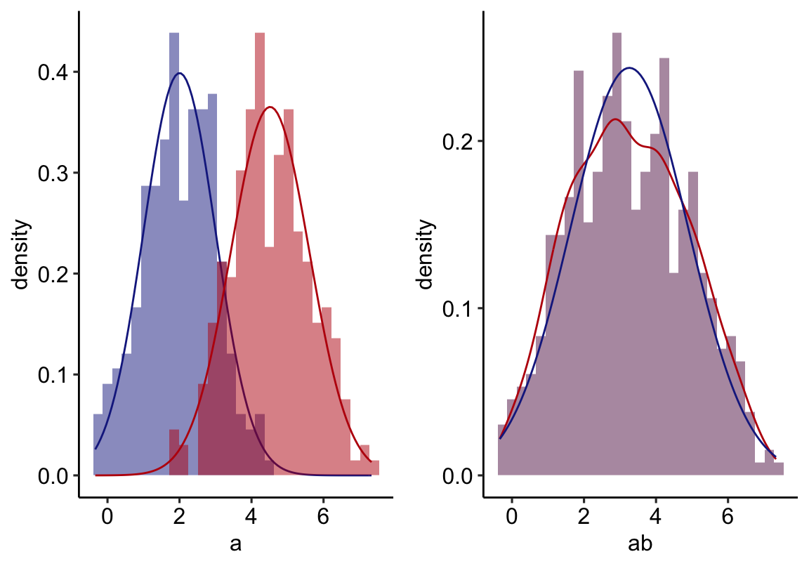
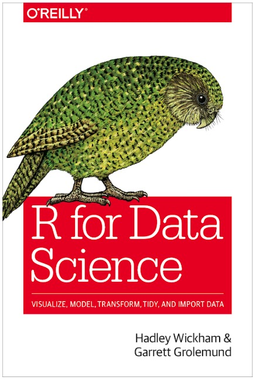
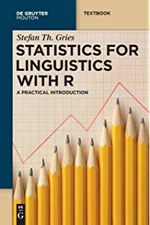

Sitzung 1
Allgemeines
Ein paar Worte zum Tutorium
- anfangs kaum Statistik, sondern eine Einführung in R
- ich lade meine Foliensätze, die R-Scripte und die externen Dateien, die wir verwenden, bei StudIP hoch
- damit ihr was vom Tutorium habt, wäre es super, wenn ihr zu jeder Sitzung einen Computer mitbringen würdet (oder euch zusammenschließt und zu zweit einen Computer benutzt)
- wenn ihr keinen Computer zur Verfügung habt, gibt es auch Apps für R, die sind aber kein guter Ersatz; vor allem, wenn wir in der dritten Sitzung anfangen, mit richtigen Daten zu arbeiten
- IOS: https://apps.apple.com/de/app/r-programming-compiler/id1158038782 (nicht getestet)
- Android ???
- Wie ihr R auf euren Computer bekommt, zeige ich euch gleich
R: Ein kurzer Überblick
- 1992 entwickelt, angelehnt an die Programmiersprache S
- Fokus liegt auf statistischen Berechnungen und Grafiken aller Art
- weit verbreitet, Anwendung vor allem in der Wissenschaft
- fortlaufende Weiterentwicklung durch die Nutzergemeinschaft (v.a. in Form von Paketen)
- kostenlos verwendbar
Ein Beispielplot

Installation
- Am wichtigsten: R selbst
- Wir werden zwar hauptsächlich mit R arbeiten, aber da die Oberfläche wenig benutzerfreundlich ist, verwende ich außerdem Rstudio
- Bitte alle beides installieren und zum Laufen bringen!
Tada!
Und so sieht das Ganze dann ungefähr aus
Hilfestellung
https://r4ds.had.co.nz / https://www.degruyter.com/view/product/203826  
Mehr Hilfe
Mehr kostenlose Bücher und Resourcen: https://committedtotape.shinyapps.io/freeR/
Allgemeines
Wir werden hauptsächlich mit Zahlen arbeiten, darum ist das Folgende wichtig: - R verwendet den amerikanischen Dezimaltrenner (0.1666667 statt 0,1666667)
## [1] 0.1666667Um Hilfe mit Funktionen zu bekommen: - ?Funktionsname - help(Funktionsname)
- Gebt mal Folgendes ein:
Was kann man mit R alles anstellen?
Skripte
R ist eine Programmiersprache, die, wie alle anderen auch, textbasiert ist. D.h. man arbeitet in der Regel mit Skripten, in denen man seinen Code schreibt und diesen dann ausführt.
Hier ein Beispiel für ein (zugegeben sehr einfaches) Skript:
Und so sieht das Ganze dann ungefähr aus
Skripte
Zwar könntet ihr auch einfach in der Konsole in Rstudio euren Code schreiben, aber dann geht er euch ziemlich schnell verloren und ihr könnt nicht einfach dort wieder anfangen, wo ihr aufgehört habt.
Übung 1
- erstellt einen Order auf dem Desktop
- erstellt ein Skript in RStudio und speichert es in diesem Ordner
- macht eure Noizen am besten in diesem R-Skript
- Fließtext als Kommentare nach dem #-Zeichen
## [1] "Hello World"Mathematische Funktionen in R
- Quadratwurzel: sqrt()
- Summe: sum()
- Miminum: min()
- Maximum: max()
- Zahlenreihen von x bis y: x:y
## [1] 1 2 3 4 5Übung II
- addiert 500 und 5
- subtrahiert 19 von 3
- dividiert 144 durch 12
- addiert alle Zahlen von 1 bis 1000
- addiert 4 und 5 fünf mal hintereinander
Lösungen II
## [1] 505## [1] 16## [1] 12## [1] 500500## [1] 9## [1] 9## [1] 9## [1] 9## [1] 9Logische Operatoren
Logische Operatoren geben Wahrheitswerte (wie in der Semantik) wieder: entweder TRUE (oder T) oder FALSE (oder F)
- Vergleichsoperatoren
- Gleich: ==
- Ungleich: !=
- Kleiner: <
- Größer: >
- Kleiner gleich: <=
- Größer gleich: >=
- Logische Operatoren
- Und/Konjuntion: &
- Oder/Disjunktion: |
- Negation: !
Beispiele: Logische Operatoren
## [1] TRUE## [1] TRUE## [1] FALSE## [1] TRUE## [1] TRUE## [1] TRUER ist objektorientiert
- In R ist es oftmals wichtig, Berechnungen für die spätere Wiederverwertung zu speichern
- das geschieht, indem man ihnen einen
- diese Objekte erscheinen dann in der Arbeitsumgebung (eng. Enviromnent)
Arbeitsumgebung
Mehr zu Objekten
Wir können uns Objekte (oft auch Varablen genannt) als Mikrospeicherorte in unserem Makrospeicher (dem Skript selbst) vorstellen. Aus diesem Grund ist es wichtig, dass ihr Berechnungen und anderes, das ihr wiederverwenden wollt, als Objekt (mit sinnigem Namen) speichert
meinname <- "Maik Thalmann"
meineuni <- "Uni Göttingen"
paste(meinname, "studiert an der", meineuni)## [1] "Maik Thalmann studiert an der Uni Göttingen"Wenn ihr euch die Arbeitsumgebung anzeigen lassen möchtet, verwendet ls(), löschen könnt ihr sie mit rm(list = ls())
## [1] "a" "b" "c" "meineuni" "meinname"RStudio-Optionen
Optionen, die das Leben erleichtern
Bitte stellt folgende Optionen in RStudio ein:
- Tools \(\rightarrow\) Global Options \(\rightarrow\) Code \(\rightarrow\)
- Editing
- Soft-Wrap Source Files
- Saving
- Default Text Encoding: UTF-8
- Display
- Highlight Selected Line
- Show syntax highlighting in console input
- Editing
Das war’s!
Danke fürs mitmachen und bis nächste Woche!